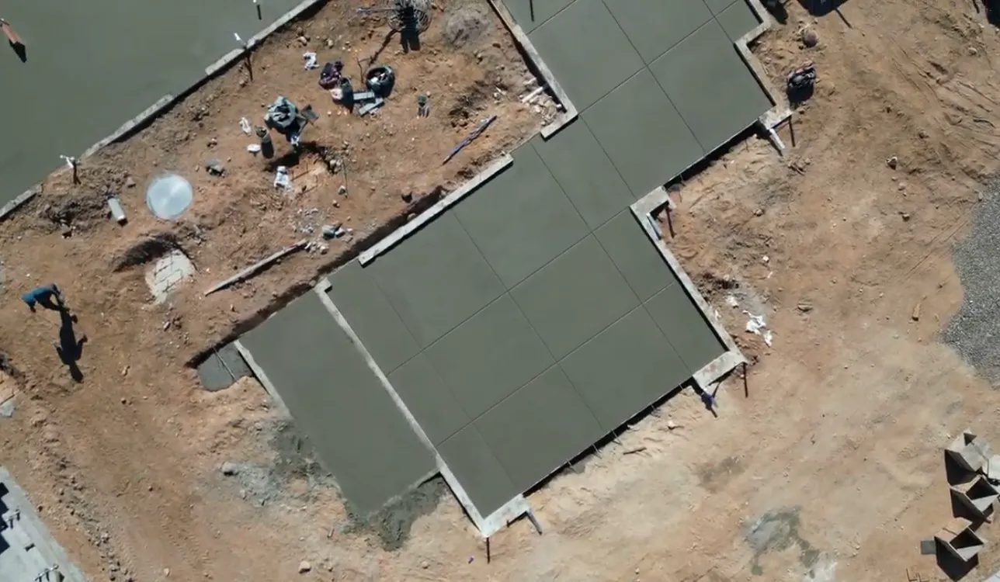
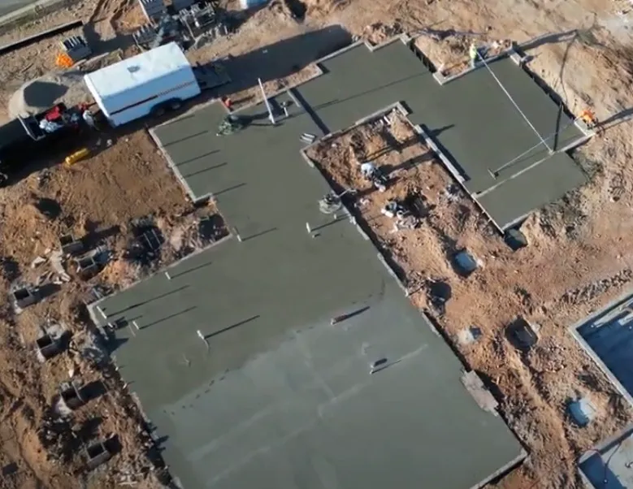
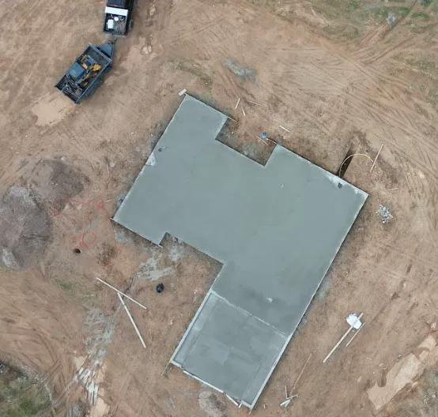
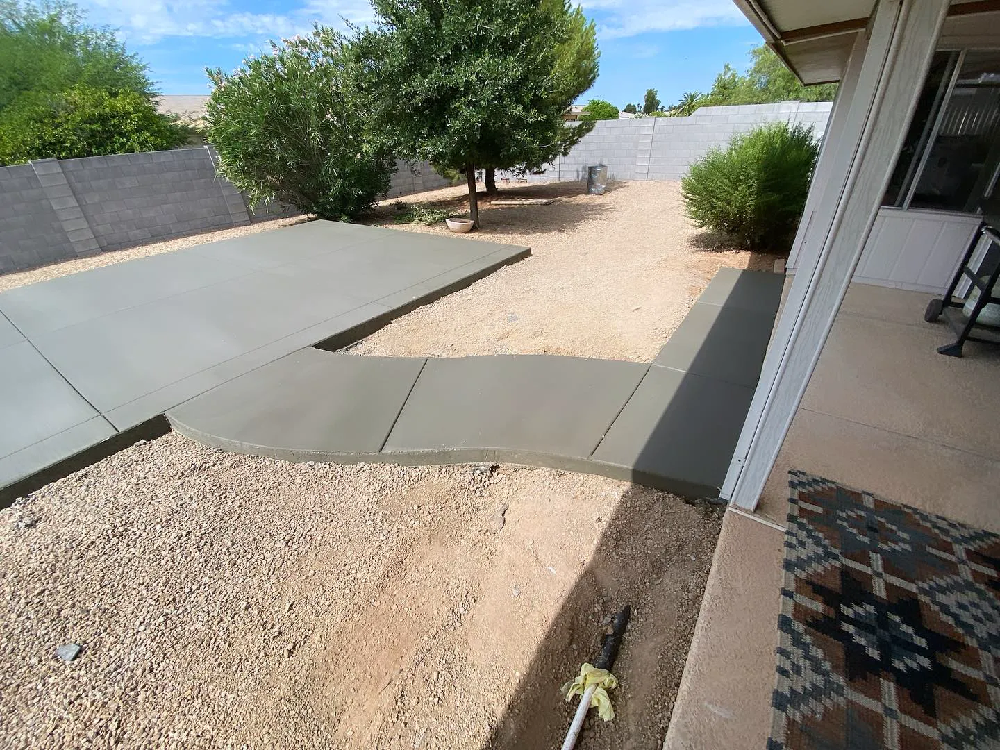
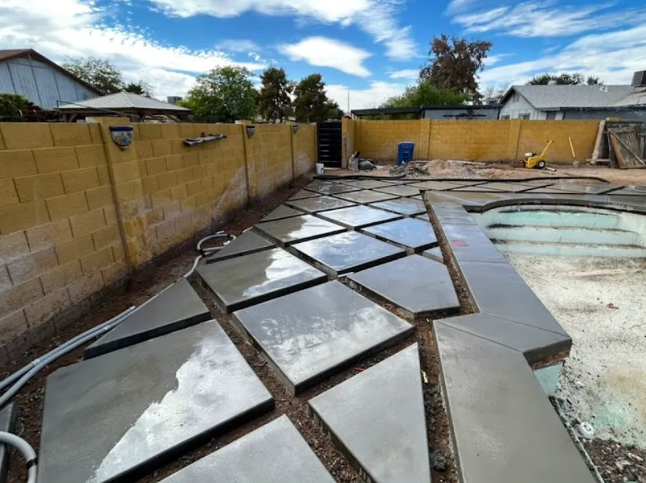

Slab foundation contractor in Phoenix, AZ
Everything built on a slab depends on it being flat, solid and poured once. Arizona Premier Concrete builds slab foundations for residential and commercial structures across the Phoenix valley, for new homes, additions and commercial buildings, with a focus on quality, safety and long-term reliability.

- AZ ROC #338830
- 4.9 stars from 27 Google reviews
- Family owned
- 20+ years of experience
- Free in-person estimates
What's included.
A foundation cannot be adjusted after it cures, so the work that counts happens before the truck arrives. In the valley that includes soil that can be rock-hard caliche in one spot and loose fill in the next, summer heat that shortens your working time, and plans or engineering that have to be followed exactly. We build to your drawings and tell you what we see on site.
- Slab foundations for new homes, additions and garages
- Commercial slabs and pads
- Work from your plans or your engineer's drawings
- Formwork set to line and level
- Placement and finishing scheduled around Arizona heat
- Curing and a walkthrough when the job is done
How we do it.
-
Contact us
Send the estimate form. We call to learn about the project and set up a visit.
-
Consultation
We visit the site, measure, and go over your plans and what the slab has to carry.
-
Deposit
A deposit secures your place on the schedule.
-
Install
Our team forms, places and finishes the slab from start to finish.
When to call us.
If any of these sound familiar, the sooner someone looks at it the cheaper it usually is to fix.
- You are building a new home, addition or commercial building
- You need a slab for a garage, shop or detached structure
- An existing slab has settled, cracked through or tilted
- A builder needs a concrete sub who shows up and finishes
Recent work.




Slab foundations questions.
Do I need a permit for a slab foundation?
Almost always. Foundations are structural, so cities inspect them. The permit and inspection steps depend on your city and the plans. We tell you what your job needs.
How long does a slab take to cure?
A slab is usually walkable within a day or two and keeps gaining strength for about 28 days. Your builder or engineer decides when framing can load it.
Can you work from my engineer's plans?
Yes. We build to the drawings. If something on site does not match, we raise it before we pour, not after.
Why do summer pours start so early?
Heat shortens the time you have to place and finish concrete. Starting at first light gives the crew room to do it properly before the slab dries too fast.
Need a slab foundation poured right?
Call us, or send the details and we'll call you to set up a free in-person estimate.